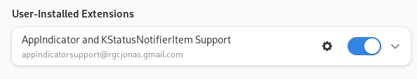

History of Distribution usage
The RPM world
I started using GNU/Linux in 2000, discovering it in a master, it was RedHat on those shared machines. At this point, I got hooked and installed a now dead distribution called Mandrake (then rebranded Mandriva)

The DEB world
Later in 2003, Christophe Badoit installed for the biotech company I was working in: debian. I knew he was then using Archlinux but it took many years to make this switch.

Debian was absolutely great, and I was an happy user until 2010. Some people in the company started to use Ubuntu but I stick to the original. My main issue was the latency between the publications of new versions their arrival as debian packages, even in unstable.
In 2010, I quit the company and returned to academia. On a brand-new laptop, I installed Ubuntu. It became my main distro until today. It was a good journey, much easier to install than debian, oki-sh release of new versions and the apt system that was robust and nice to use.

The issues
Time passing by, I got fed up with several aspects of Ubuntu:
- Bloat software, who needs those pre-installed stuff?
- GNOME overlay, this Dock and forked gnome experience started to feel weird
- Wayland integration was still not fine
- The
snapworld, no thanks, I was here forapt - Delay to get new version.
To expand on point 2-4, during lock-downs, sharing screen through the madness of webex, teams etc.. in Wayland was not great. If you had the snap firefox, it could not see some files on a ssh mounted folder. For point 5. for example version 4.3.0 was released in April 2023. Using Ubuntu version dev 23.10 in September 2023 I was still stuck with 4.2.2 from October 2022. I know I could set up ppa repository of some users but with snap it became all too far from the great apt system I enjoyed for long.
Turns out I need a rolling release ditribution.
Archlinux
The pkg.tar.xz world

Welcome to pacman and other great stuff. For example, disk encryption, where with Ubuntu it was not obvious how to set it up. This is now under control.
pacman is dealing with your installation and dependencies (just like apt). Software and utilities are coming from either
coreextra
But what about RStudio? Signal? Slack?
All those accessory[^Of note, RStudio for me it absolutely not accessory, but they not for ] software can be found in the AUR: Arch User Repository.
Then, for dealing with those 3 sources I was advice to use yay. After a couple of months, I enjoy typing yay in the Terminal and get the source updated + the packages. right now, I have only one AUR package to update.
$ yay
[sudo] password for xxxxx:
:: Synchronizing package databases...
core is up to date
extra 8.3 MiB 10.6 MiB/s 00:01 [################################################] 100%
:: Searching AUR for updates...
:: Searching databases for updates...
-> Flagged Out Of Date AUR Packages: telegram-desktop-bin
:: 1 package to upgrade/install.
1 aur/signal-desktop-beta-bin 6.29.0beta.1-1 -> 6.31.0beta.1-1
==> Packages to exclude: (eg: "1 2 3", "1-3", "^4" or repo name)
-> Excluding packages may cause partial upgrades and break systems
==> But next time, I will be notified of any update for open-ssh, rstudio or quarto.
Of note, for the later, you can choose if you want to install the release version, the pre-release, binaries or compile things yourself. So far it fits completely my needs.
Of note, I got the version of I wanted without any tweaks:
Example of a bigger upgrade
:: Synchronizing package databases...
core 129.3 KiB 994 KiB/s 00:00 [###################################################] 100%
extra 8.3 MiB 26.1 MiB/s 00:00 [###################################################] 100%
:: Searching AUR for updates...
:: Searching databases for updates...
:: 56 packages to upgrade/install.
56 core/glib2 2.76.5-1 -> 2.78.0-1
55 core/glib2-docs 2.76.5-1 -> 2.78.0-1
54 core/iana-etc 20230803-1 -> 20230907-1
53 core/iproute2 6.4.0-1 -> 6.5.0-1
52 core/linux 6.4.12.arch1-1 -> 6.5.2.arch1-1
51 core/openssh 9.4p1-3 -> 9.4p1-4
50 core/python 3.11.5-1 -> 3.11.5-2
49 core/shadow 4.13-2 -> 4.13-3
48 core/systemd 254.1-1 -> 254.3-1
47 core/systemd-libs 254.1-1 -> 254.3-1
46 core/systemd-sysvcompat 254.1-1 -> 254.3-1
45 extra/code 1.81.1-1 -> 1.82.0-1
44 extra/freerdp 2:2.10.0-4 -> 2:2.11.1-1
[...]
8 extra/npm 9.8.1-1 -> 10.1.0-1
7 extra/openpmix 4.2.5-1 -> 4.2.6-1
6 extra/pandoc-cli 0.1.1-41 -> 0.1.1-43
5 extra/vulkan-icd-loader 1.3.255-1 -> 1.3.263-1
4 aur/oh-my-posh-bin 18.7.0-1 -> 18.8.1-1
3 aur/quarto-cli-bin-pre-release 1.4.352-6 -> 1.4.358-6
2 aur/rstudio-desktop-bin 2023.06.1.524-1 -> 2023.06.2.561-1
1 aur/signal-desktop-beta-bin 6.29.0beta.1-1 -> 6.31.0beta.1-1Arch installation with full disk encryptiom
I first installed Arch on my personal laptop (ThinkPad P14s) for testing (without encryption). I then proceed with my work laptop (XPS 7390), mostly following this install tutorial by mjnaderi. The encryption of the full disk works well using LVM2 and GRUB.
The differences were:
- Install the
linux-ltskernel in case something gets broken with the current one (thanks Hyacinthe!) - No dual boot with
The most tricky part is GRUB with efi but this tutorial steps were clear and correct.
Post-install adjustments
docker
- Disable PC speaker using
gsettings set org.gnome.desktop.wm.preferences audible-bell false - Missing fonts
- Useful packages
- Chromium (needed for
{renderthis}):yay ungoogled-chromium-bin - Jottacloud:
yay jotta-cli - Slack:
yay slack-desktop - Signal and Telegram:
yay telegram-desktop-bin signal-desktop-beta-bin - System tray notifications
yay extension-manager, then start AppExtension Managerand install:

Then it displays things like this:
- For the package
{V8}, needs to activate the static lib before installing:
- Avoid typing the GPG passphrase and save it in GNOME
in ~/.config/gnupg/gpg-agent.conf